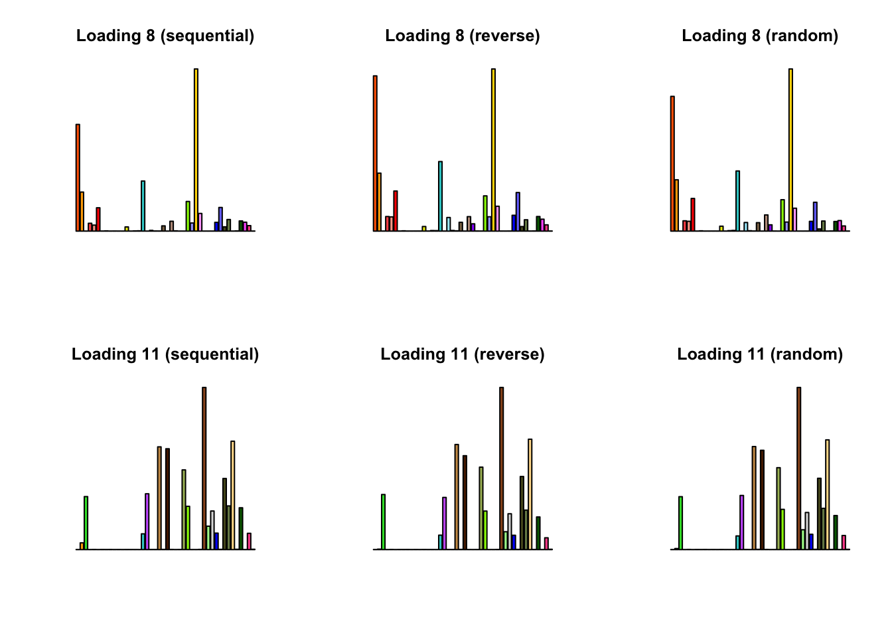
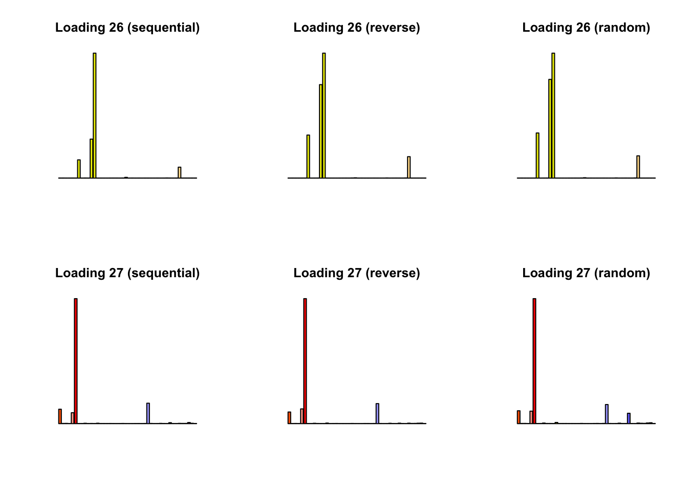
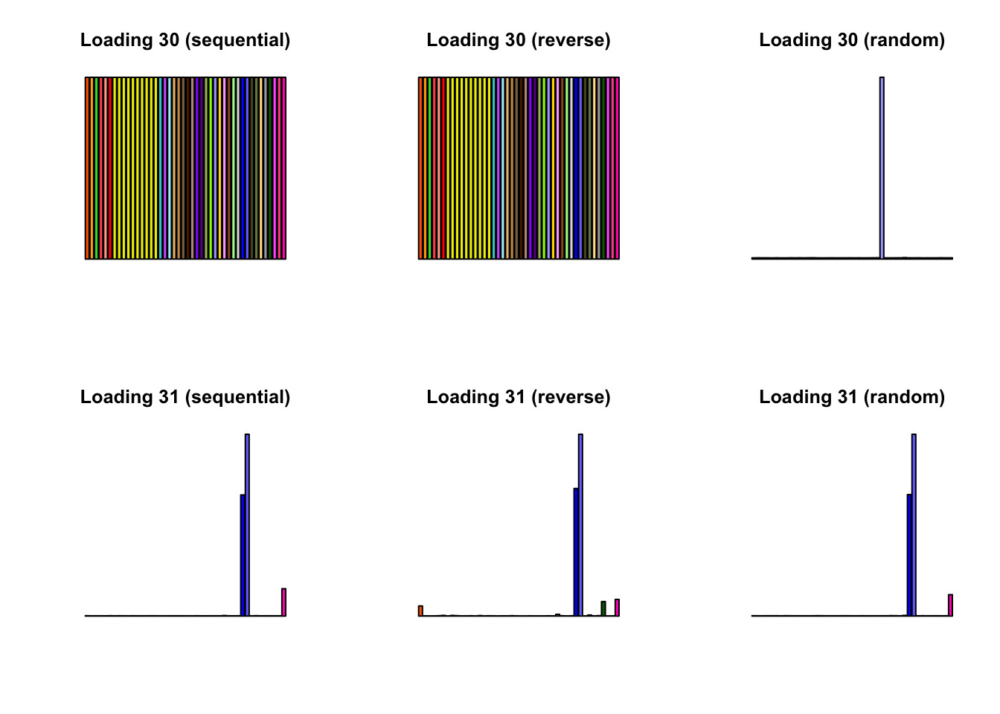
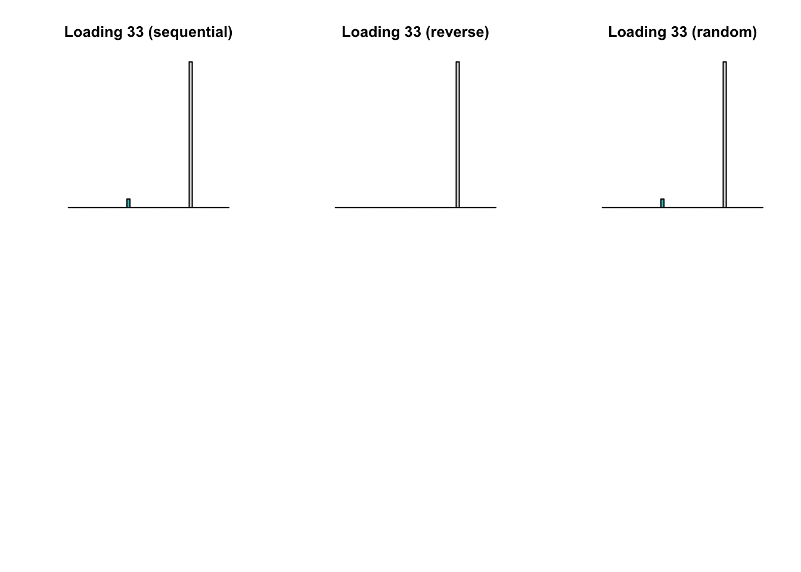

Last updated: 2018-08-22
workflowr checks: (Click a bullet for more information) ✔ R Markdown file: up-to-date
Great! Since the R Markdown file has been committed to the Git repository, you know the exact version of the code that produced these results.
✔ Environment: empty
Great job! The global environment was empty. Objects defined in the global environment can affect the analysis in your R Markdown file in unknown ways. For reproduciblity it’s best to always run the code in an empty environment.
✔ Seed:
set.seed(20180714)
The command set.seed(20180714) was run prior to running the code in the R Markdown file. Setting a seed ensures that any results that rely on randomness, e.g. subsampling or permutations, are reproducible.
✔ Session information: recorded
Great job! Recording the operating system, R version, and package versions is critical for reproducibility.
✔ Repository version: 81d3467
wflow_publish or wflow_git_commit). workflowr only checks the R Markdown file, but you know if there are other scripts or data files that it depends on. Below is the status of the Git repository when the results were generated:
Ignored files:
Ignored: .DS_Store
Ignored: .Rhistory
Ignored: .Rproj.user/
Ignored: docs/.DS_Store
Ignored: docs/figure/.DS_Store
Untracked files:
Untracked: code/random.R
Untracked: data/greedy19.rds
Untracked: data/random/
Unstaged changes:
Modified: analysis/index.Rmd
| File | Version | Author | Date | Message |
|---|---|---|---|---|
| Rmd | 81d3467 | Jason Willwerscheid | 2018-08-22 | wflow_publish(“analysis/random.Rmd”) |
When trying to coax sparse nonnegative factors out of the “strong” GTEx dataset (see here), I noticed that later-added factor/loading pairs are in general much sparser than earlier-added pairs. Here I’d like to determine whether the order of backfitting makes any difference to the factors obtained (and the final objective).
I begin with the 34 factor/loading pairs that are added via a single call to flash_add_greedy and backfit using three methods: 1. updating factor/loading pairs sequentially from #1 to #34; 2. updating sequentially in backwards order (from #34 to #1); and 3. updating in a random order.
I pre-run the code below and load the results from file.
devtools::load_all("/Users/willwerscheid/GitHub/flashr/")Loading flashrgtex <- readRDS(gzcon(url("https://github.com/stephenslab/gtexresults/blob/master/data/MatrixEQTLSumStats.Portable.Z.rds?raw=TRUE")))
strong <- t(gtex$strong.z)
strong_data <- flash_set_data(strong, S = 1)
fl_seq <- readRDS("./data/random/fl1.rds")
fl_rev <- readRDS("./data/random/fl2.rds")
fl_rand <- readRDS("./data/random/fl3.rds")The final objective for each method is:
c(sequential = flash_get_objective(strong_data, fl_seq),
reverse = flash_get_objective(strong_data, fl_rev),
random = flash_get_objective(strong_data, fl_rand))sequential reverse random
-1257537 -1257237 -1257406 Most of the factor/loading pairs are nearly indistinguishable to the eye. Below I plot the seven factor/loadings with the largest differences:
normalize_EL <- function(fl) {
norms <- apply(abs(fl$EL), 2, max)
return(sweep(fl$EL, 2, norms, `/`))
}
norm_EL_seq <- normalize_EL(fl_seq)
norm_EL_rev <- normalize_EL(fl_rev)
norm_EL_rand <- normalize_EL(fl_rand)
# Find factor/loading pairs with largest differences
max_diff <- pmax(abs(norm_EL_seq - norm_EL_rev),
abs(norm_EL_seq - norm_EL_rand),
abs(norm_EL_rev - norm_EL_rand))
factors_to_show <- which(apply(max_diff, 2, max) > .05)
missing.tissues <- c(7, 8, 19, 20, 24, 25, 31, 34, 37)
gtex.colors <- read.table("https://github.com/stephenslab/gtexresults/blob/master/data/GTExColors.txt?raw=TRUE", sep = '\t', comment.char = '')[-missing.tissues, 2]
par(mfrow = c(2, 3))
for (i in factors_to_show) {
barplot(fl_seq$EL[, i], main=paste0('Loading ', i, ' (sequential)'),
las=2, cex.names=0.4, yaxt='n', col=as.character(gtex.colors),
names="")
barplot(fl_rev$EL[, i], main=paste0('Loading ', i, ' (reverse)'),
las=2, cex.names=0.4, yaxt='n', col=as.character(gtex.colors),
names="")
barplot(fl_rand$EL[, i], main=paste0('Loading ', i, ' (random)'),
las=2, cex.names=0.4, yaxt='n', col=as.character(gtex.colors),
names="")
}
Results are somewhat inconclusive. There are clearly some differences, but even the largest differences seem to be relatively minor (in a qualitative sense). On the other hand, a difference in objective of 300 is perhaps not to be sneered at.
It might be worthwhile to investigate more systematically with simulated data. Here, the usual sequential method is both slowest and attains the worst final objective. It would be interesting to determine whether this is regularly the case.
Click “Code” to view the code used to obtain the above results.
devtools::load_all("/Users/willwerscheid/GitHub/flashr/") # use "dev" branch
devtools::load_all("/Users/willwerscheid/GitHub/ebnm/")
gtex <- readRDS(gzcon(url("https://github.com/stephenslab/gtexresults/blob/master/data/MatrixEQTLSumStats.Portable.Z.rds?raw=TRUE")))
strong <- t(gtex$strong.z)
strong_data <- flash_set_data(strong, S = 1)
fl_init <- readRDS("/Users/willwerscheid/GitHub/MASHvFLASH/output/MASHvFLASHnn/fl_g.rds")
# Sequential backfit (from factor/loading 1 to factor/loading 34) -------
#
ebnm_param = list(f = list(), l = list(mixcompdist="+uniform"))
fl1 <- flash_backfit_workhorse(strong_data,
fl_init,
kset = 1:34,
var_type = "zero",
ebnm_fn = "ebnm_ash",
ebnm_param = ebnm_param,
verbose_output = "odLn",
nullcheck = FALSE)
# Use warmstarts to clamp it down:
ebnm_param = list(f = list(warmstart = TRUE),
l = list(mixcompdist = "+uniform", warmstart = TRUE))
fl1 <- flash_backfit_workhorse(strong_data,
fl1,
kset = 1:34,
var_type = "zero",
ebnm_fn = "ebnm_ash",
ebnm_param = ebnm_param,
verbose_output = "odLn",
nullcheck = FALSE)
## 77 + 375 iterations; -1257537
saveRDS(fl1, "./data/random/fl1.rds")
# Sequential backfit in reverse order (from 34 to 1) --------------------
#
ebnm_param = list(f = list(), l = list(mixcompdist="+uniform"))
fl2 <- flash_backfit_workhorse(strong_data,
fl_init,
kset = 34:1,
var_type = "zero",
ebnm_fn = "ebnm_ash",
ebnm_param = ebnm_param,
verbose_output = "odLn",
nullcheck = FALSE)
ebnm_param = list(f = list(warmstart = TRUE),
l = list(mixcompdist = "+uniform", warmstart = TRUE))
fl2 <- flash_backfit_workhorse(strong_data,
fl2,
kset = 34:1,
var_type = "zero",
ebnm_fn = "ebnm_ash",
ebnm_param = ebnm_param,
verbose_output = "odLn",
nullcheck = FALSE)
## 77 + 125 iterations; objective: -1257237
saveRDS(fl2, "./data/random/fl2.rds")
# Backfit the factor/loadings in a random order -------------------------
#
set.seed(666)
ebnm_param = list(f = list(), l = list(mixcompdist="+uniform"))
fl3 <- fl_init
old_obj <- flash_get_objective(strong_data, fl3)
diff <- Inf
iter <- 0
while (diff > .01) {
iter <- iter + 1
fl3 <- flash_backfit_workhorse(strong_data,
fl3,
kset=sample(1:34, 34),
var_type = "zero",
ebnm_fn = "ebnm_ash",
ebnm_param = ebnm_param,
verbose_output = "",
maxiter = 1,
nullcheck = FALSE)
obj <- flash_get_objective(strong_data, fl3)
message("Iteration ", iter, ": ", obj)
diff <- obj - old_obj
old_obj <- obj
}
ebnm_param = list(f = list(warmstart = TRUE),
l = list(mixcompdist = "+uniform", warmstart = TRUE))
old_obj <- flash_get_objective(strong_data, fl3)
diff <- Inf
iter <- 0
while (diff > .01) {
iter <- iter + 1
fl3 <- flash_backfit_workhorse(strong_data,
fl3,
kset=sample(1:34, 34),
var_type = "zero",
ebnm_fn = "ebnm_ash",
ebnm_param = ebnm_param,
verbose_output = "",
maxiter = 1,
nullcheck = FALSE)
obj <- flash_get_objective(strong_data, fl3)
message("Iteration ", iter, ": ", obj)
diff <- obj - old_obj
old_obj <- obj
}
# 52 + 231 iterations; final obj: -1257408
saveRDS(fl3, "./data/random/fl3.rds")sessionInfo()R version 3.4.3 (2017-11-30)
Platform: x86_64-apple-darwin15.6.0 (64-bit)
Running under: macOS High Sierra 10.13.6
Matrix products: default
BLAS: /Library/Frameworks/R.framework/Versions/3.4/Resources/lib/libRblas.0.dylib
LAPACK: /Library/Frameworks/R.framework/Versions/3.4/Resources/lib/libRlapack.dylib
locale:
[1] en_US.UTF-8/en_US.UTF-8/en_US.UTF-8/C/en_US.UTF-8/en_US.UTF-8
attached base packages:
[1] stats graphics grDevices utils datasets methods base
other attached packages:
[1] flashr_0.5-14
loaded via a namespace (and not attached):
[1] Rcpp_0.12.17 pillar_1.2.1 plyr_1.8.4
[4] compiler_3.4.3 git2r_0.21.0 workflowr_1.0.1
[7] R.methodsS3_1.7.1 R.utils_2.6.0 iterators_1.0.9
[10] tools_3.4.3 testthat_2.0.0 digest_0.6.15
[13] tibble_1.4.2 evaluate_0.10.1 memoise_1.1.0
[16] gtable_0.2.0 lattice_0.20-35 rlang_0.2.0
[19] Matrix_1.2-12 foreach_1.4.4 commonmark_1.4
[22] yaml_2.1.17 parallel_3.4.3 ebnm_0.1-12
[25] withr_2.1.1.9000 stringr_1.3.0 roxygen2_6.0.1.9000
[28] xml2_1.2.0 knitr_1.20 devtools_1.13.4
[31] rprojroot_1.3-2 grid_3.4.3 R6_2.2.2
[34] rmarkdown_1.8 ggplot2_2.2.1 ashr_2.2-10
[37] magrittr_1.5 whisker_0.3-2 backports_1.1.2
[40] scales_0.5.0 codetools_0.2-15 htmltools_0.3.6
[43] MASS_7.3-48 assertthat_0.2.0 softImpute_1.4
[46] colorspace_1.3-2 stringi_1.1.6 lazyeval_0.2.1
[49] munsell_0.4.3 doParallel_1.0.11 pscl_1.5.2
[52] truncnorm_1.0-8 SQUAREM_2017.10-1 R.oo_1.21.0 This reproducible R Markdown analysis was created with workflowr 1.0.1